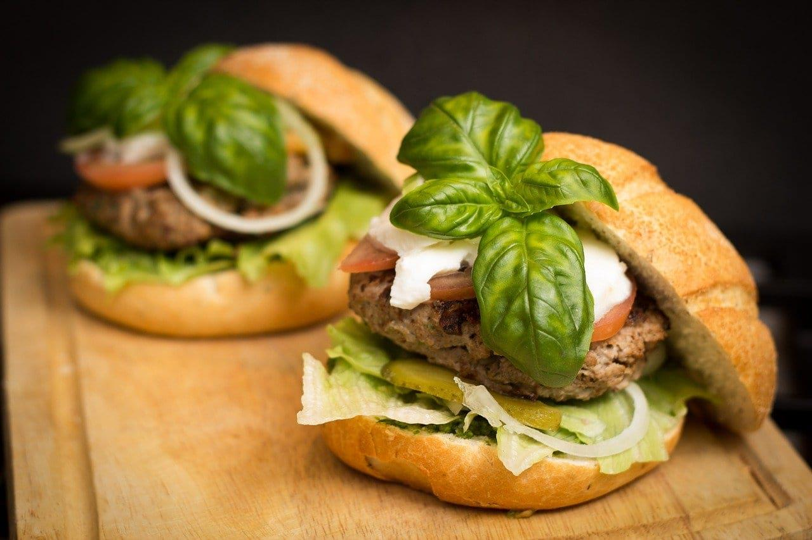

- Heat 2 teaspoons oil in a large saute pan over medium-high heat. Add mushrooms and onion and saute, stirring occasionally, for 4-5 minutes or until the onion is soft and translucent. Stir in garlic, and saute for 1-2 more minutes, stirring occasionally, until the garlic is fragrant. Remove mixture from heat, drain off any extra juices or oil, and set aside.
- Meanwhile, as the mushroom mixture is cooking, add the black beans to a large mixing bowl and roughly mash them with a potato masher (or the back of a spoon). Add in the cooked mushroom mixture, breadcrumbs, egg white, steak seasoning, and stir well until the mixture is evenly mixed
- Divide the mixture into four equal portions (each will be about 1/2 cup), and use your hands to form each portion into a large patty. Set aside.
- Rinse out the saute pan, then return it to the stove and heat the remaining 1 tablespoon oil over medium-high heat. Carefully transfer the black bean burgers to the pan and cook on each side for 5-6 minutes, flipping once. If your pan is not big enough to fit all four burgers, you may need to do this in batches.
- Remove from heat and serve the burgers on buns immediately, topped with Arla Muenster sliced cheese, fresh arugula, and/or any other toppings that sound good to you.

Ingredients
Qty
Olive oil
1 Tablespoon
Babby bella
4 Ounces
Garlic
2 Cloves
Black Beans
15 ounces
Panko breadcrumbs
2/3 Cup
Egg white
1
Low sodium steak
2 Teaspoon